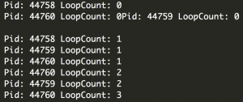

Python爬虫进阶六之多进程的用法
前言
在上一节中介绍了thread多线程库。python中的多线程其实并不是真正的多线程，并不能做到充分利用多核CPU资源。
如果想要充分利用，在python中大部分情况需要使用多进程，那么这个包就叫做 multiprocessing。
借助它，可以轻松完成从单进程到并发执行的转换。multiprocessing支持子进程、通信和共享数据、执行不同形式的同步，提供了Process、Queue、Pipe、Lock等组件。
那么本节要介绍的内容有：
- Process
- Lock
- Semaphore
- Queue
- Pipe
- Pool
Process
基本使用
在multiprocessing中，每一个进程都用一个Process类来表示。首先看下它的API
Process([group [, target [, name [, args [, kwargs]]]]])
- target表示调用对象，你可以传入方法的名字
- args表示被调用对象的位置参数元组，比如target是函数a，他有两个参数m，n，那么args就传入(m, n)即可
- kwargs表示调用对象的字典
- name是别名，相当于给这个进程取一个名字
- group分组，实际上不使用
我们先用一个实例来感受一下：
import multiprocessing
def process(num):
print 'Process:', num
if __name__ == '__main__':
for i in range(5):
p = multiprocessing.Process(target=process, args=(i,))
p.start()
最简单的创建Process的过程如上所示，target传入函数名，args是函数的参数，是元组的形式，如果只有一个参数，那就是长度为1的元组。
然后调用start()方法即可启动多个进程了。
另外你还可以通过 cpu_count() 方法还有 active_children() 方法获取当前机器的 CPU 核心数量以及得到目前所有的运行的进程。
通过一个实例来感受一下：
import multiprocessing
import time
def process(num):
time.sleep(num)
print 'Process:', num
if __name__ == '__main__':
for i in range(5):
p = multiprocessing.Process(target=process, args=(i,))
p.start()
print('CPU number:' + str(multiprocessing.cpu_count()))
for p in multiprocessing.active_children():
print('Child process name: ' + p.name + ' id: ' + str(p.pid))
print('Process Ended')
运行结果：
Process: 0
CPU number:8
Child process name: Process-2 id: 9641
Child process name: Process-4 id: 9643
Child process name: Process-5 id: 9644
Child process name: Process-3 id: 9642
Process Ended
Process: 1
Process: 2
Process: 3
Process: 4
自定义类
另外你还可以继承Process类，自定义进程类，实现run方法即可。
用一个实例来感受一下：
from multiprocessing import Process
import time
class MyProcess(Process):
def __init__(self, loop):
Process.__init__(self)
self.loop = loop
def run(self):
for count in range(self.loop):
time.sleep(1)
print('Pid: ' + str(self.pid) + ' LoopCount: ' + str(count))
if __name__ == '__main__':
for i in range(2, 5):
p = MyProcess(i)
p.start()
在上面的例子中，我们继承了 Process 这个类，然后实现了run方法。打印出来了进程号和参数。
运行结果：
Pid: 28116 LoopCount: 0
Pid: 28117 LoopCount: 0
Pid: 28118 LoopCount: 0
Pid: 28116 LoopCount: 1
Pid: 28117 LoopCount: 1
Pid: 28118 LoopCount: 1
Pid: 28117 LoopCount: 2
Pid: 28118 LoopCount: 2
Pid: 28118 LoopCount: 3
可以看到，三个进程分别打印出了2、3、4条结果。
我们可以把一些方法独立的写在每个类里封装好，等用的时候直接初始化一个类运行即可。
deamon
在这里介绍一个属性，叫做deamon。每个线程都可以单独设置它的属性，如果设置为True，当父进程结束后，子进程会自动被终止。
用一个实例来感受一下，还是原来的例子，增加了deamon属性：
from multiprocessing import Process
import time
class MyProcess(Process):
def __init__(self, loop):
Process.__init__(self)
self.loop = loop
def run(self):
for count in range(self.loop):
time.sleep(1)
print('Pid: ' + str(self.pid) + ' LoopCount: ' + str(count))
if __name__ == '__main__':
for i in range(2, 5):
p = MyProcess(i)
p.daemon = True
p.start()
print 'Main process Ended!'
在这里，调用的时候增加了设置deamon，最后的主进程（即父进程）打印输出了一句话。
运行结果：
Main process Ended!
结果很简单，因为主进程没有做任何事情，直接输出一句话结束，所以在这时也直接终止了子进程的运行。
这样可以有效防止无控制地生成子进程。如果这样写了，你在关闭这个主程序运行时，就无需额外担心子进程有没有被关闭了。
不过这样并不是我们想要达到的效果呀，能不能让所有子进程都执行完了然后再结束呢？那当然是可以的，只需要加入join()方法即可。
from multiprocessing import Process
import time
class MyProcess(Process):
def __init__(self, loop):
Process.__init__(self)
self.loop = loop
def run(self):
for count in range(self.loop):
time.sleep(1)
print('Pid: ' + str(self.pid) + ' LoopCount: ' + str(count))
if __name__ == '__main__':
for i in range(2, 5):
p = MyProcess(i)
p.daemon = True
p.start()
p.join()
print 'Main process Ended!'
在这里，每个子进程都调用了join()方法，这样父进程（主进程）就会等待子进程执行完毕。
运行结果：
Pid: 29902 LoopCount: 0
Pid: 29902 LoopCount: 1
Pid: 29905 LoopCount: 0
Pid: 29905 LoopCount: 1
Pid: 29905 LoopCount: 2
Pid: 29912 LoopCount: 0
Pid: 29912 LoopCount: 1
Pid: 29912 LoopCount: 2
Pid: 29912 LoopCount: 3
Main process Ended!
发现所有子进程都执行完毕之后，父进程最后打印出了结束的结果。
Lock
在上面的一些小实例中，你可能会遇到如下的运行结果：

什么问题？有的输出错位了。这是由于并行导致的，两个进程同时进行了输出，结果第一个进程的换行没有来得及输出，第二个进程就输出了结果。所以导致这种排版的问题。
那这归根结底是因为线程同时资源（输出操作）而导致的。
那怎么来避免这种问题？那自然是在某一时间，只能一个进程输出，其他进程等待。等刚才那个进程输出完毕之后，另一个进程再进行输出。这种现象就叫做“互斥”。
我们可以通过 Lock 来实现，在一个进程输出时，加锁，其他进程等待。等此进程执行结束后，释放锁，其他进程可以进行输出。
我们现用一个实例来感受一下：
from multiprocessing import Process, Lock
import time
class MyProcess(Process):
def __init__(self, loop, lock):
Process.__init__(self)
self.loop = loop
self.lock = lock
def run(self):
for count in range(self.loop):
time.sleep(0.1)
#self.lock.acquire()
print('Pid: ' + str(self.pid) + ' LoopCount: ' + str(count))
#self.lock.release()
if __name__ == '__main__':
lock = Lock()
for i in range(10, 15):
p = MyProcess(i, lock)
p.start()
首先看一下不加锁的输出结果：
Pid: 45755 LoopCount: 0
Pid: 45756 LoopCount: 0
Pid: 45757 LoopCount: 0
Pid: 45758 LoopCount: 0
Pid: 45759 LoopCount: 0
Pid: 45755 LoopCount: 1
Pid: 45756 LoopCount: 1
Pid: 45757 LoopCount: 1
Pid: 45758 LoopCount: 1
Pid: 45759 LoopCount: 1
Pid: 45755 LoopCount: 2Pid: 45756 LoopCount: 2
Pid: 45757 LoopCount: 2
Pid: 45758 LoopCount: 2
Pid: 45759 LoopCount: 2
Pid: 45756 LoopCount: 3
Pid: 45755 LoopCount: 3
Pid: 45757 LoopCount: 3
Pid: 45758 LoopCount: 3
Pid: 45759 LoopCount: 3
Pid: 45755 LoopCount: 4
Pid: 45756 LoopCount: 4
Pid: 45757 LoopCount: 4
Pid: 45759 LoopCount: 4
Pid: 45758 LoopCount: 4
Pid: 45756 LoopCount: 5
Pid: 45755 LoopCount: 5
Pid: 45757 LoopCount: 5
Pid: 45759 LoopCount: 5
Pid: 45758 LoopCount: 5
Pid: 45756 LoopCount: 6Pid: 45755 LoopCount: 6
Pid: 45757 LoopCount: 6
Pid: 45759 LoopCount: 6
Pid: 45758 LoopCount: 6
Pid: 45755 LoopCount: 7Pid: 45756 LoopCount: 7
Pid: 45757 LoopCount: 7
Pid: 45758 LoopCount: 7
Pid: 45759 LoopCount: 7
Pid: 45756 LoopCount: 8Pid: 45755 LoopCount: 8
Pid: 45757 LoopCount: 8
Pid: 45758 LoopCount: 8Pid: 45759 LoopCount: 8
Pid: 45755 LoopCount: 9
Pid: 45756 LoopCount: 9
Pid: 45757 LoopCount: 9
Pid: 45758 LoopCount: 9
Pid: 45759 LoopCount: 9
Pid: 45756 LoopCount: 10
Pid: 45757 LoopCount: 10
Pid: 45758 LoopCount: 10
Pid: 45759 LoopCount: 10
Pid: 45757 LoopCount: 11
Pid: 45758 LoopCount: 11
Pid: 45759 LoopCount: 11
Pid: 45758 LoopCount: 12
Pid: 45759 LoopCount: 12
Pid: 45759 LoopCount: 13
可以看到有些输出已经造成了影响。
然后我们对其加锁：
from multiprocessing import Process, Lock
import time
class MyProcess(Process):
def __init__(self, loop, lock):
Process.__init__(self)
self.loop = loop
self.lock = lock
def run(self):
for count in range(self.loop):
time.sleep(0.1)
self.lock.acquire()
print('Pid: ' + str(self.pid) + ' LoopCount: ' + str(count))
self.lock.release()
if __name__ == '__main__':
lock = Lock()
for i in range(10, 15):
p = MyProcess(i, lock)
p.start()
我们在print方法的前后分别添加了获得锁和释放锁的操作。这样就能保证在同一时间只有一个print操作。
看一下运行结果：
Pid: 45889 LoopCount: 0
Pid: 45890 LoopCount: 0
Pid: 45891 LoopCount: 0
Pid: 45892 LoopCount: 0
Pid: 45893 LoopCount: 0
Pid: 45889 LoopCount: 1
Pid: 45890 LoopCount: 1
Pid: 45891 LoopCount: 1
Pid: 45892 LoopCount: 1
Pid: 45893 LoopCount: 1
Pid: 45889 LoopCount: 2
Pid: 45890 LoopCount: 2
Pid: 45891 LoopCount: 2
Pid: 45892 LoopCount: 2
Pid: 45893 LoopCount: 2
Pid: 45889 LoopCount: 3
Pid: 45890 LoopCount: 3
Pid: 45891 LoopCount: 3
Pid: 45892 LoopCount: 3
Pid: 45893 LoopCount: 3
Pid: 45889 LoopCount: 4
Pid: 45890 LoopCount: 4
Pid: 45891 LoopCount: 4
Pid: 45892 LoopCount: 4
Pid: 45893 LoopCount: 4
Pid: 45889 LoopCount: 5
Pid: 45890 LoopCount: 5
Pid: 45891 LoopCount: 5
Pid: 45892 LoopCount: 5
Pid: 45893 LoopCount: 5
Pid: 45889 LoopCount: 6
Pid: 45890 LoopCount: 6
Pid: 45891 LoopCount: 6
Pid: 45893 LoopCount: 6
Pid: 45892 LoopCount: 6
Pid: 45889 LoopCount: 7
Pid: 45890 LoopCount: 7
Pid: 45891 LoopCount: 7
Pid: 45892 LoopCount: 7
Pid: 45893 LoopCount: 7
Pid: 45889 LoopCount: 8
Pid: 45890 LoopCount: 8
Pid: 45891 LoopCount: 8
Pid: 45892 LoopCount: 8
Pid: 45893 LoopCount: 8
Pid: 45889 LoopCount: 9
Pid: 45890 LoopCount: 9
Pid: 45891 LoopCount: 9
Pid: 45892 LoopCount: 9
Pid: 45893 LoopCount: 9
Pid: 45890 LoopCount: 10
Pid: 45891 LoopCount: 10
Pid: 45892 LoopCount: 10
Pid: 45893 LoopCount: 10
Pid: 45891 LoopCount: 11
Pid: 45892 LoopCount: 11
Pid: 45893 LoopCount: 11
Pid: 45893 LoopCount: 12
Pid: 45892 LoopCount: 12
Pid: 45893 LoopCount: 13
`
嗯，一切都没问题了。
所以在访问临界资源时，使用Lock就可以避免进程同时占用资源而导致的一些问题。
Semaphore
信号量，是在进程同步过程中一个比较重要的角色。可以控制临界资源的数量，保证各个进程之间的互斥和同步。
如果你学过操作系统，那么一定对这方面非常了解，如果你还不了解信号量是什么，可以参考信号量解析
来了解一下它是做什么的。
那么接下来我们就用一个实例来演示一下进程之间利用Semaphore做到同步和互斥，以及控制临界资源数量。
from multiprocessing import Process, Semaphore, Lock, Queue
import time
buffer = Queue(10)
empty = Semaphore(2)
full = Semaphore(0)
lock = Lock()
class Consumer(Process):
def run(self):
global buffer, empty, full, lock
while True:
full.acquire()
lock.acquire()
buffer.get()
print('Consumer pop an element')
time.sleep(1)
lock.release()
empty.release()
class Producer(Process):
def run(self):
global buffer, empty, full, lock
while True:
empty.acquire()
lock.acquire()
buffer.put(1)
print('Producer append an element')
time.sleep(1)
lock.release()
full.release()
if __name__ == '__main__':
p = Producer()
c = Consumer()
p.daemon = c.daemon = True
p.start()
c.start()
p.join()
c.join()
print 'Ended!'
如上代码实现了注明的生产者和消费者问题，定义了两个进程类，一个是消费者，一个是生产者。
定义了一个共享队列，利用了Queue数据结构，然后定义了两个信号量，一个代表缓冲区空余数，一个表示缓冲区占用数。
生产者Producer使用empty.acquire()方法来占用一个缓冲区位置，然后缓冲区空闲区大小减小1，接下来进行加锁，对缓冲区进行操作。然后释放锁，然后让代表占用的缓冲区位置数量+1，消费者则相反。
运行结果如下：
Producer append an element
Producer append an element
Consumer pop an element
Consumer pop an element
Producer append an element
Producer append an element
Consumer pop an element
Consumer pop an element
Producer append an element
Producer append an element
Consumer pop an element
Consumer pop an element
Producer append an element
Producer append an element
可以发现两个进程在交替运行，生产者先放入缓冲区物品，然后消费者取出，不停地进行循环。
通过上面的例子来体会一下信号量的用法。
Queue
在上面的例子中我们使用了Queue，可以作为进程通信的共享队列使用。
在上面的程序中，如果你把Queue换成普通的list，是完全起不到效果的。即使在一个进程中改变了这个list，在另一个进程也不能获取到它的状态。
因此进程间的通信，队列需要用Queue。当然这里的队列指的是 multiprocessing.Queue
依然是用上面那个例子，我们一个进程向队列中放入数据，然后另一个进程取出数据。
from multiprocessing import Process, Semaphore, Lock, Queue
import time
from random import random
buffer = Queue(10)
empty = Semaphore(2)
full = Semaphore(0)
lock = Lock()
class Consumer(Process):
def run(self):
global buffer, empty, full, lock
while True:
full.acquire()
lock.acquire()
print 'Consumer get', buffer.get()
time.sleep(1)
lock.release()
empty.release()
class Producer(Process):
def run(self):
global buffer, empty, full, lock
while True:
empty.acquire()
lock.acquire()
num = random()
print 'Producer put ', num
buffer.put(num)
time.sleep(1)
lock.release()
full.release()
if __name__ == '__main__':
p = Producer()
c = Consumer()
p.daemon = c.daemon = True
p.start()
c.start()
p.join()
c.join()
print 'Ended!'
运行结果：
Producer put 0.719213647437
Producer put 0.44287326683
Consumer get 0.719213647437
Consumer get 0.44287326683
Producer put 0.722859424381
Producer put 0.525321338921
Consumer get 0.722859424381
Consumer get 0.525321338921
可以看到生产者放入队列中数据，然后消费者将数据取出来。
get方法有两个参数，blocked和timeout，意思为阻塞和超时时间。默认blocked是true，即阻塞式。
当一个队列为空的时候如果再用get取则会阻塞，所以这时候就需要吧blocked设置为false，即非阻塞式，实际上它就会调用get_nowait()方法，此时还需要设置一个超时时间，在这么长的时间内还没有取到队列元素，那就抛出Queue.Empty异常。
当一个队列为满的时候如果再用put放则会阻塞，所以这时候就需要吧blocked设置为false，即非阻塞式，实际上它就会调用put_nowait()方法，此时还需要设置一个超时时间，在这么长的时间内还没有放进去元素，那就抛出Queue.Full异常。
另外队列中常用的方法
Queue.qsize() 返回队列的大小 ，不过在 Mac OS 上没法运行。
原因：
def qsize(self):
#Raises NotImplementedError on Mac OSX because of broken sem_getvalue() return self._maxsize – self._sem._semlock._get_value()
Queue.empty() 如果队列为空，返回True, 反之False
Queue.full() 如果队列满了，返回True,反之False
Queue.get([block[, timeout]]) 获取队列，timeout等待时间
Queue.get_nowait() 相当Queue.get(False)
Queue.put(item) 阻塞式写入队列，timeout等待时间
Queue.put_nowait(item) 相当Queue.put(item, False)
Pipe
管道，顾名思义，一端发一端收。
Pipe可以是单向(half-duplex)，也可以是双向(duplex)。我们通过mutiprocessing.Pipe(duplex=False)创建单向管道 (默认为双向)。一个进程从PIPE一端输入对象，然后被PIPE另一端的进程接收，单向管道只允许管道一端的进程输入，而双向管道则允许从两端输入。
用一个实例来感受一下：
from multiprocessing import Process, Pipe
class Consumer(Process):
def __init__(self, pipe):
Process.__init__(self)
self.pipe = pipe
def run(self):
self.pipe.send('Consumer Words')
print 'Consumer Received:', self.pipe.recv()
class Producer(Process):
def __init__(self, pipe):
Process.__init__(self)
self.pipe = pipe
def run(self):
print 'Producer Received:', self.pipe.recv()
self.pipe.send('Producer Words')
if __name__ == '__main__':
pipe = Pipe()
p = Producer(pipe[0])
c = Consumer(pipe[1])
p.daemon = c.daemon = True
p.start()
c.start()
p.join()
c.join()
print 'Ended!'
在这里声明了一个默认为双向的管道，然后将管道的两端分别传给两个进程。两个进程互相收发。观察一下结果：
Producer Received: Consumer Words
Consumer Received: Producer Words
Ended!
以上是对pipe的简单介绍。
Pool
在利用Python进行系统管理的时候，特别是同时操作多个文件目录，或者远程控制多台主机，并行操作可以节约大量的时间。当被操作对象数目不大时，可以直接利用multiprocessing中的Process动态成生多个进程，十几个还好，但如果是上百个，上千个目标，手动的去限制进程数量却又太过繁琐，此时可以发挥进程池的功效。 Pool可以提供指定数量的进程，供用户调用，当有新的请求提交到pool中时，如果池还没有满，那么就会创建一个新的进程用来执行该请求；但如果池中的进程数已经达到规定最大值，那么该请求就会等待，直到池中有进程结束，才会创建新的进程来它。
在这里需要了解阻塞和非阻塞的概念。
阻塞和非阻塞关注的是程序在等待调用结果（消息，返回值）时的状态。
阻塞即要等到回调结果出来，在有结果之前，当前进程会被挂起。
Pool的用法有阻塞和非阻塞两种方式。非阻塞即为添加进程后，不一定非要等到改进程执行完就添加其他进程运行，阻塞则相反。
现用一个实例感受一下非阻塞的用法：
from multiprocessing import Lock, Pool
import time
def function(index):
print 'Start process: ', index
time.sleep(3)
print 'End process', index
if __name__ == '__main__':
pool = Pool(processes=3)
for i in xrange(4):
pool.apply_async(function, (i,))
print "Started processes"
pool.close()
pool.join()
print "Subprocess done."
在这里利用了apply_async方法，即非阻塞。
运行结果：
Started processes
Start process: Start process: 0
1
Start process: 2
End processEnd process 0
1
Start process: 3
End process 2
End process 3
Subprocess done.
可以发现在这里添加三个进程进去后，立马就开始执行，不用非要等到某个进程结束后再添加新的进程进去。
下面再看看阻塞的用法：
from multiprocessing import Lock, Pool
import time
def function(index):
print 'Start process: ', index
time.sleep(3)
print 'End process', index
if __name__ == '__main__':
pool = Pool(processes=3)
for i in xrange(4):
pool.apply(function, (i,))
print "Started processes"
pool.close()
pool.join()
print "Subprocess done."
在这里只需要把apply_async改成apply即可。
运行结果如下：
Start process: 0
End process 0
Start process: 1
End process 1
Start process: 2
End process 2
Start process: 3
End process 3
Started processes
Subprocess done.
这样一来就好理解了吧？
下面对函数进行解释：
apply_async(func[, args[, kwds[, callback]]]) 它是非阻塞，apply(func[, args[, kwds]])是阻塞的。
close() 关闭pool，使其不在接受新的任务。
terminate() 结束工作进程，不在处理未完成的任务。
join() 主进程阻塞，等待子进程的退出， join方法要在close或terminate之后使用。
当然每个进程可以在各自的方法返回一个结果。apply或apply_async方法可以拿到这个结果并进一步进行处理。
from multiprocessing import Lock, Pool
import time
def function(index):
print 'Start process: ', index
time.sleep(3)
print 'End process', index
return index
if __name__ == '__main__':
pool = Pool(processes=3)
for i in xrange(4):
result = pool.apply_async(function, (i,))
print result.get()
print "Started processes"
pool.close()
pool.join()
print "Subprocess done."
运行结果：
Start process: 0
End process 0
0
Start process: 1
End process 1
1
Start process: 2
End process 2
2
Start process: 3
End process 3
3
Started processes
Subprocess done.
另外还有一个非常好用的map方法。
如果你现在有一堆数据要处理，每一项都需要经过一个方法来处理，那么map非常适合。
比如现在你有一个数组，包含了所有的URL，而现在已经有了一个方法用来抓取每个URL内容并解析，那么可以直接在map的第一个参数传入方法名，第二个参数传入URL数组。
现在我们用一个实例来感受一下：
from multiprocessing import Pool
import requests
from requests.exceptions import ConnectionError
def scrape(url):
try:
print requests.get(url)
except ConnectionError:
print 'Error Occured ', url
finally:
print 'URL ', url, ' Scraped'
if __name__ == '__main__':
pool = Pool(processes=3)
urls = [
'https://www.baidu.com',
'http://www.meituan.com/',
'http://blog.csdn.net/',
'http://xxxyxxx.net'
]
pool.map(scrape, urls)
在这里初始化一个Pool，指定进程数为3，如果不指定，那么会自动根据CPU内核来分配进程数。
然后有一个链接列表，map函数可以遍历每个URL，然后对其分别执行scrape方法。
运行结果：
<Response [403]>
URL http://blog.csdn.net/ Scraped
<Response [200]>
URL https://www.baidu.com Scraped
Error Occured http://xxxyxxx.net
URL http://xxxyxxx.net Scraped
<Response [200]>
URL http://www.meituan.com/ Scraped
可以看到遍历就这么轻松地实现了。
结语
多进程multiprocessing相比多线程功能强大太多，而且使用范围更广，希望本文对大家有帮助！
本文参考
https://docs.python.org/2/library/multiprocessing.html
http://www.cnblogs.com/vamei/archive/2012/10/12/2721484.html